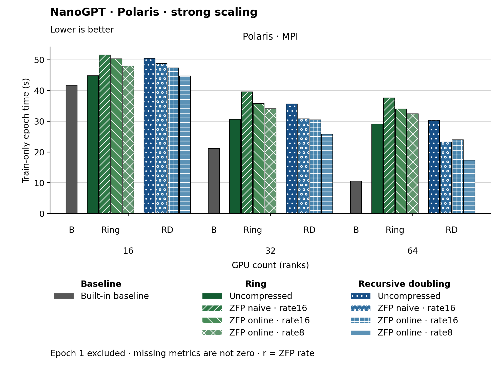

The figure uses bars. Families and methods are identified by text and patterns in addition to color. The metric is Train-only epoch time (s). Polaris · MPI, GPU count (ranks) 16: Built-in baseline has the lowest plotted value, 41.670. Polaris · MPI, GPU count (ranks) 32: Built-in baseline has the lowest plotted value, 21.100. Polaris · MPI, GPU count (ranks) 64: Built-in baseline has the lowest plotted value, 10.550. Epoch 1 is excluded. Values are medians; when repeated runs are available the selected repeat policy is median. These are not confidence intervals across repeated jobs. Missing or unrecorded metrics are omitted, not set to zero.
| Panel | GPU count (ranks) | Method | Value | Runs |
|---|---|---|---|---|
| Polaris · MPI | 16 | none | 41.67 | 1 |
| Polaris · MPI | 16 | recursive_doubling | 50.43 | 1 |
| Polaris · MPI | 16 | recursive_doubling_zfp_naive:16 | 48.77 | 1 |
| Polaris · MPI | 16 | recursive_doubling_zfp_online_coll:16 | 47.37 | 1 |
| Polaris · MPI | 16 | recursive_doubling_zfp_online_coll:8 | 44.69 | 1 |
| Polaris · MPI | 16 | ring | 44.78 | 1 |
| Polaris · MPI | 16 | ring_zfp_naive:16 | 51.55 | 1 |
| Polaris · MPI | 16 | ring_zfp_online_coll:16 | 50.34 | 1 |
| Polaris · MPI | 16 | ring_zfp_online_coll:8 | 47.89 | 1 |
| Polaris · MPI | 32 | none | 21.1 | 1 |
| Polaris · MPI | 32 | recursive_doubling | 35.63 | 1 |
| Polaris · MPI | 32 | recursive_doubling_zfp_naive:16 | 30.77 | 1 |
| Polaris · MPI | 32 | recursive_doubling_zfp_online_coll:16 | 30.43 | 1 |
| Polaris · MPI | 32 | recursive_doubling_zfp_online_coll:8 | 25.79 | 1 |
| Polaris · MPI | 32 | ring | 30.61 | 1 |
| Polaris · MPI | 32 | ring_zfp_naive:16 | 39.6 | 1 |
| Polaris · MPI | 32 | ring_zfp_online_coll:16 | 35.8 | 1 |
| Polaris · MPI | 32 | ring_zfp_online_coll:8 | 34.09 | 1 |
| Polaris · MPI | 64 | none | 10.55 | 1 |
| Polaris · MPI | 64 | recursive_doubling | 30.3 | 1 |
| Polaris · MPI | 64 | recursive_doubling_zfp_naive:16 | 23.26 | 1 |
| Polaris · MPI | 64 | recursive_doubling_zfp_online_coll:16 | 23.98 | 1 |
| Polaris · MPI | 64 | recursive_doubling_zfp_online_coll:8 | 17.36 | 1 |
| Polaris · MPI | 64 | ring | 29.08 | 1 |
| Polaris · MPI | 64 | ring_zfp_naive:16 | 37.62 | 1 |
| Polaris · MPI | 64 | ring_zfp_online_coll:16 | 34.01 | 1 |
| Polaris · MPI | 64 | ring_zfp_online_coll:8 | 32.39 | 1 |